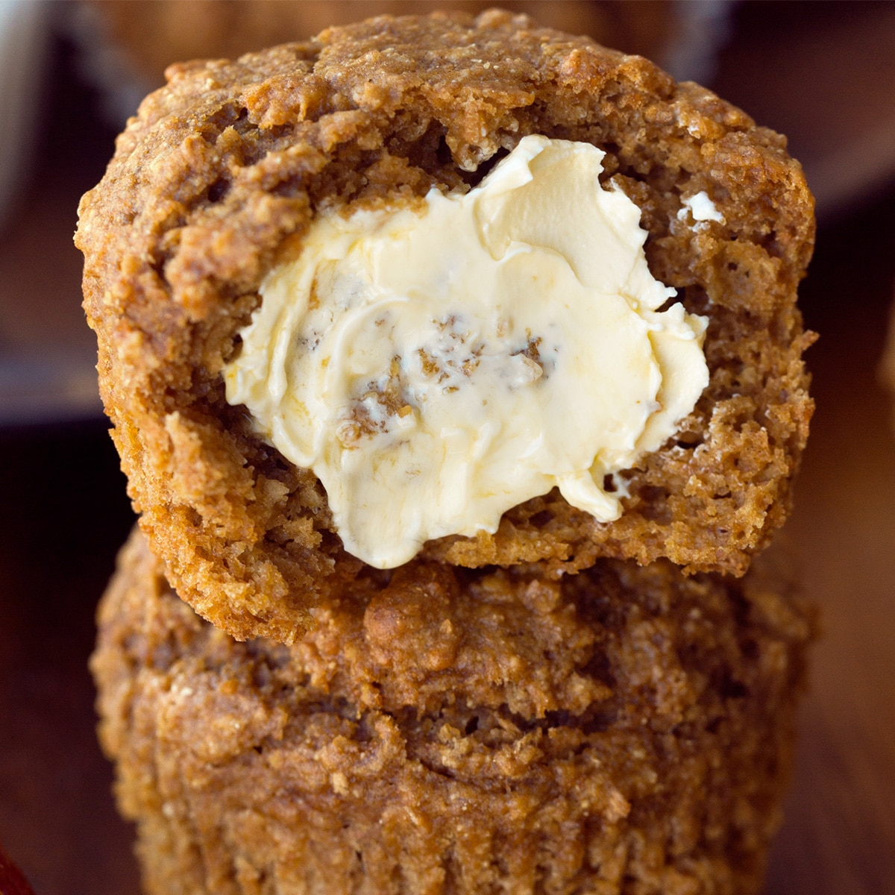

Bran Muffin Recipe

Description
In this article I'll be showing you how to make
some very nutritious, delicious, and filling bran muffins
Ingredients
- 1 1/2 cups wheat bran
- 1 cup buttermilk
- 1/3 cup brown sugar
- 1/3 cup vegetable oil
- 1 egg
- 1 tsp. vanilla extract
- 1 cup all purpose flour
- 1 tsp. baking powder
- 1 tsp. baking soda
- 1/2 tsp. salt
- 1/2 cup dried cranberries
- 1/2 cup chopped dried figs
- 1/2 tsp. cinnamon
- 1 cup toasted walnuts
- 1 tbsp. chia seeds
- 1 tbsp. flax seeds
- sprinkle of nutmeg
Steps
- Preheat oven to 375 degrees F and grease muffin tin
with butter or pam. You could also use muffin liners.
(I just get a napkin and smother it in butter to grease)
- Mix together wheat bran and buttermilk, allowing them
to sit for 10 minutes.
- Roughly chop and toast walnuts.
- Add egg, brown sugar, oil, cinnamon, nutmeg, and
vanilla to a bowl; beat until it becomes smooth.
Add mixture to your wheat bran and buttermilk; stir
until combined.
- In a seperate bowl, sift your flour, baking powder, baking
soda, and salt together; add to your wheat bran mixture.
Mix until only just combined. Add in figs, cranberries,
and walnuts; pour the batter into the muffin tin.
- Bake muffins for 25 minutes or until a toothpick through
the center comes out clean. Let cool for 15-20 minutes.
Back to Recipes Menu